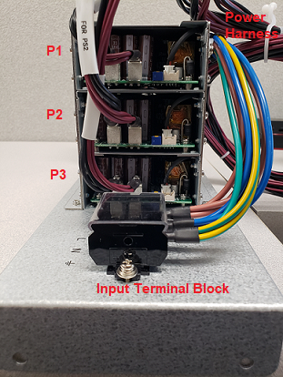
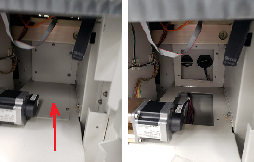
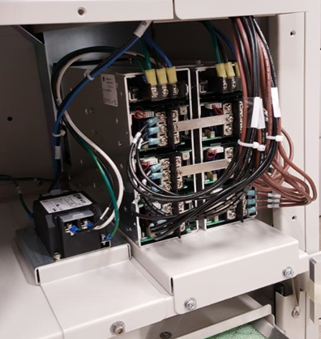
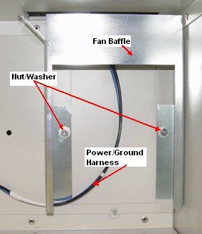

Replacing Power Supply (New Cosel, Cosel, Magnetek with new TDK)
This procedure describes how to replace the instrument power supply when replacing Cosel and Magnetek power supplies with a new TDK power supply without an input filter.
TDK Power Supply

-
Remove the power supply and input filter.
- Remove the New Cosel and Cosel power supplies.
New Cosel

- Pull the Wash Buffer drawer out and open the lower right instrument door to expose the power supply.
- Remove the power supply cover plate (5 screws).
Warning: Ensure that the instrument power cord is disconnected.
- Remove Power Supply mounting screws (2 screws).
- Disconnect the black, blue, green wires from the Power Filter module (3 screws). Set the wires to the side to be reuse.
Warning: DO NOT pop the power switch out to replace the switch harness (black and blue connector wires). The switch locking taps will be damaged and will not be reusable.

- Gently pull the power supply harness through Access Plate and out the front of the power supply area.
Note: For better access to remove or reroute the power harness from the front, remove the upper power supply plate/cover (7 screws) next to the reagent storage Z-motor.
- Remove the Power Supply and Input Filter module from the instrument.
Old Cosel

- Pull the Wash Buffer drawer out and open the lower right instrument door to expose the power supply.
- Remove the power supply cover plate (5 screws).
Warning: Ensure that the instrument power cord is disconnected.
- Remove the Power Filter module and Power Supply mounting screws (3 screws).
- Disconnect the black, blue, green wires from the Power Filter module (3 screws). Set the wires to the side to be reuse.
Warning: DO NOT pop the power switch out to replace the switch harness (black and blue connector wires). The switch locking taps will be damaged and will not be reusable.
- Gently pull the power supply harness through Access Plate and out the front of the power supply area.
Note: For better access to remove or reroute the power harness from the front, remove the upper power supply plate/cover (7 screws) next to the reagent storage Z-motor. - Remove the Power Supply and Input Filter module from the instrument.
- Remove the Magnetek power supply.
Magnetek
Note: Replacing the Magnetek power supply with the TDK power supply would require- replacing the power switch (not part of the power supply kit)
- replacing the power switch harness/wires (part of the power supply kit)

- Pull the Wash Buffer drawer out and open the lower right instrument door to expose the power supply.
- Remove the cover plate on the power supply (five screws).
Warning: Ensure that the instrument power cord is disconnected.
- Remove the cover on the power conditioner (two screws).
- Disconnect the two power connectors from the power conditioner.
- Remove the front mounting screw from the power conditioner.
- Slide the power conditioner partially out of the instrument. Remove the mounting screw for the green ground wire that is mounted on the left side of the power conditioner.
- Remove the power conditioner from the instrument.
- Disconnect the power connector from the lower left corner of the power supply.
- Disconnect the power outlet wires (brown and black) from the front of the mounted power supply (six screws).
- Remove the power supply mounting screws (two screws, two key slots in the baseplate).
- Gently pull the power supply harness through Access Plate and out the front of the power supply area.
Note: For better access to remove or reroute the power harness from the front, remove the upper power supply plate/cover (7 screws) next to the reagent storage Z-motor. - Remove the Power Supply module from the instrument.
- Replace the power switch and power switch harness/wires.
- Pop the power switch out and disconnect all wire connectors. The locking taps will have to be damaged to allow the switch to be popped out.
- Discard the power switch and remove only the switch harness (blue and black wires with yellow connectors).
- Connect the inlet power wires with clear connectors to the switch top connectors (black to top left and blue to top right).
- Connect the new power switch harness/wires with yellow connectors to the switch bottom connectors (black to bottom left and blue to bottom right) and route the wires through the fan baffle area down to the left power supply area.

- Gently push the power switch in place and ensure it is locked in place.
Note:- ON -I should be oriented up.
- The Blue wires should both be connected on the right side of the power switch.
- Remove the New Cosel and Cosel power supplies.